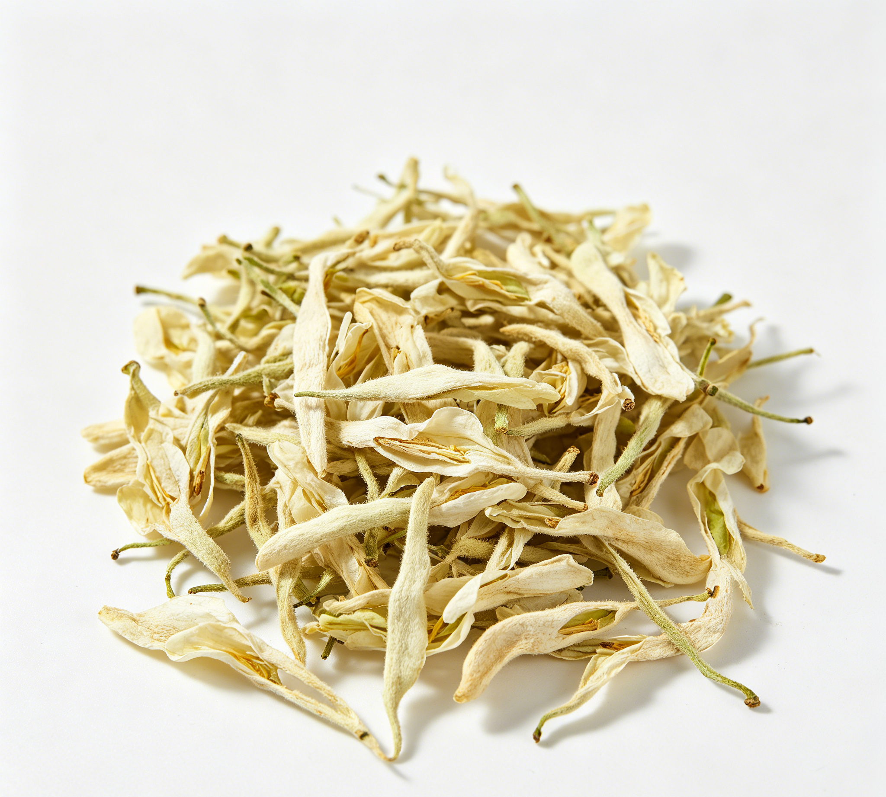

📋 基本信息
中文名白扁豆花
拉丁名Lablab purpureus (L.)
英文名Flos.Dolichos Lablab L.
产地科：豆科（Fabaceae/Leguminosae）；属：扁豆属（Lablab）；拉丁学名：Lablab purpureus (L.) Sweet（syn. Dolichos lablab L.）。原产印度，现全国各地均有栽培；同植物药材白扁豆主产于湖南、安徽、河南、江苏、浙江等地，花随产地采集。
性状None
用法用量内服：煎汤，3～9g；或研末；或捣汁。外用：适量，捣敷。【来源：《中华本草》】
贮藏置干燥处，防霉，防蛀。【来源：花类药材通用贮藏要求，综合整理】
☯ 传统属性
四气平
五味甘、淡
归经脾、胃、大肠经
功能主治解暑化湿，和中健脾。主夏伤暑湿，发热，泄泻，痢疾，赤白带下，跌打伤肿。【来源：《中华本草》】
禁忌症本品性味平和，一般人群均可适量使用；脾胃虚寒、大便稀溏而无暑湿者不宜单独大量使用。【来源：公开食疗与本草文献综合整理】
毒性历代本草记载本品性平无毒，未见毒副作用的明确文献记载；过量食用可能引起胃肠不适，正常食用量下安全性良好。
适宜体质气虚质、平和质、痰湿质、湿热质
适宜证型气虚证、脾胃气虚证、痰湿证、湿热证
🔬 现代研究
主要成分据公开文献综述，白扁豆花含蛋白质、碳水化合物及多种矿物质等营养成分，并含黄酮类等活性成分；同植物种子（白扁豆）主要含蛋白质、脂肪、糖类、钙、磷、铁及植物凝集素等。针对花部的系统化学成分研究报道相对较少，具体成分谱尚待完善。【来源：公开科研文献综述整理】
药理作用公开文献综述报道白扁豆花具有抗炎、抗病毒等作用；其传统解暑化湿、和中健脾功效与同植物种子白扁豆已报道的降低血糖及血清胆固醇、增强免疫功能（促进T淋巴细胞活性）、抑制痢疾杆菌等作用在基原上具相关性。目前针对花部本身的现代药理实验研究尚少，机制有待深入。【来源：公开科研文献综述整理】
食疗功效清暑化湿、健脾和胃、止泻止带。民间常用于暑月泄泻、痢疾、食欲不振的膳食调理，性质平和，是夏季清补类食药物质。
食养禁忌
🏭 产品形态与潜在功能
推荐形态
丸剂代茶饮提取物
潜在功能